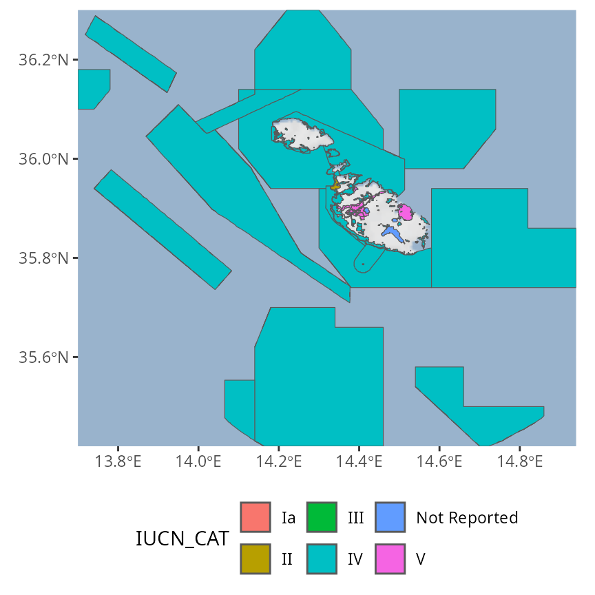

wdpar: Interface to the World Database on Protected Areas
Jeffrey O. Hanson
2021-03-28
Source:vignettes/wdpar.Rmd
wdpar.RmdOverview
The World Database on Protected Areas (WDPA) is the most comprehensive global dataset of protected areas. It is used to monitor the performance of existing protected areas and pinpoint priority areas for establishing new protected areas. Additionally, this database receives monthly updates from government agencies and non-governmental organizations. However, this dataset is associated with many issues that need to be addressed prior to analysis and the dynamic nature of this dataset means that the entire data cleaning process needs to be repeated after obtaining a new version of the dataset. The wdpar R package provides an interface to the World Database on Protected Areas (WDPA) and functions for cleaning the data following best practices (outlined in Butchart et al. 2015; Runge et al. 2015; Protected Planet).
Tutorial
Here we will provide a short introduction to the wdpar R package. First, we will load the wdpar R package. We will also load the dplyr and ggmap R packages to help explore the data.
Now we will download protected area data for Malta from Protected Planet. We can achieve this by specifying Malta’s country name (i.e. "Malta") or Malta’s ISO3 code (i.e. "MLT").
# download protected area data for Malta
# (excluding areas represented as point localities)
mlt_raw_pa_data <- wdpa_fetch("Malta")Next, we will clean the data set. Briefly, the cleaning steps include: excluding protected areas that are not yet implemented, excluding protected areas with limited conservation value, replacing missing data codes (e.g. "0") with missing data values (i.e. NA), replacing protected areas represented as points with circular protected areas that correspond to their reported extent, repairing any topological issues with the geometries, and erasing overlapping areas. For more information, see ?wdpa_clean.
# clean Malta data
mlt_pa_data <- wdpa_clean(mlt_raw_pa_data)After cleaning the data set, we will perform an additional step that involves clipping the terrestrial protected areas to Malta’s coastline. Ideally, we would also clip the marine protected areas to Malta’s Exclusive Economic Zone (EEZ) but such data are not as easy to obtain on a per country basis (but see https://www.marineregions.org/eez.php)).
# download Malta boundary from Global Administrative Areas dataset
file_path <- tempfile(fileext = "rds")
download.file("https://biogeo.ucdavis.edu/data/gadm3.6/Rsf/gadm36_MLT_0_sf.rds",
file_path)
# import Malta's boundary
mlt_boundary_data <- readRDS(file_path)
# repair any geometry issues, dissolve the border, reproject to same
# coordinate system as the protected area data, and repair the geometry again
mlt_boundary_data <-
mlt_boundary_data %>%
st_set_precision(1000) %>%
sf::st_make_valid() %>%
st_set_precision(1000) %>%
st_combine() %>%
st_union() %>%
st_set_precision(1000) %>%
sf::st_make_valid() %>%
st_transform(st_crs(mlt_pa_data)) %>%
sf::st_make_valid()## although coordinates are longitude/latitude, st_union assumes that they are planar
# clip Malta's protected areas to the coastline
mlt_pa_data <-
mlt_pa_data %>%
filter(MARINE == "terrestrial") %>%
st_intersection(mlt_boundary_data) %>%
rbind(mlt_pa_data %>%
filter(MARINE == "marine") %>%
st_difference(mlt_boundary_data)) %>%
rbind(mlt_pa_data %>% filter(!MARINE %in% c("terrestrial", "marine")))## Warning: attribute variables are assumed to be spatially constant throughout all
## geometries
## Warning: attribute variables are assumed to be spatially constant throughout all
## geometries
# recalculate the area of each protected area
mlt_pa_data <-
mlt_pa_data %>%
mutate(AREA_KM2 = as.numeric(st_area(.)) * 1e-6)Now that we have finished cleaning the data, let’s preview the data. For more information on what these columns mean, please refer to the official manual (available in English, French, Spanish, and Russian).
# print first six rows of the data
head(mlt_pa_data)## Simple feature collection with 6 features and 32 fields
## Geometry type: GEOMETRY
## Dimension: XY
## Bounding box: xmin: 1382520 ymin: 4291797 xmax: 1399694 ymax: 4299338
## CRS: +proj=cea +lon_0=0 +lat_ts=30 +x_0=0 +y_0=0 +datum=WGS84 +ellps=WGS84 +units=m +no_defs
## # A tibble: 6 x 33
## WDPAID WDPA_PID PA_DEF NAME ORIG_NAME DESIG DESIG_ENG DESIG_TYPE IUCN_CAT
## <dbl> <chr> <chr> <chr> <chr> <chr> <chr> <chr> <chr>
## 1 5.56e8 555588631 1 Il-M… Il-Majji… Park … National … National II
## 2 1.75e5 174757 1 Il-Ġ… Il-Ġonna… List … List Of H… National III
## 3 1.75e5 174758 1 Bidn… Bidnija,… List … List Of H… National III
## 4 1.94e5 194415 1 Il-Ġ… Il-Ġonna… List … List Of H… National III
## 5 1.94e5 194417 1 Il-W… Il-Wied … List … List Of H… National III
## 6 1.94e5 194418 1 Il-B… Il-Ballu… List … List Of H… National III
## # … with 24 more variables: INT_CRIT <chr>, MARINE <chr>, REP_M_AREA <dbl>,
## # GIS_M_AREA <dbl>, REP_AREA <dbl>, GIS_AREA <dbl>, NO_TAKE <chr>,
## # NO_TK_AREA <dbl>, STATUS <chr>, STATUS_YR <dbl>, GOV_TYPE <chr>,
## # OWN_TYPE <chr>, MANG_AUTH <chr>, MANG_PLAN <chr>, VERIF <chr>,
## # METADATAID <int>, SUB_LOC <chr>, PARENT_ISO <chr>, ISO3 <chr>,
## # SUPP_INFO <chr>, CONS_OBJ <chr>, GEOMETRY_TYPE <chr>, AREA_KM2 <dbl>,
## # geometry <GEOMETRY [m]>We will now reproject the data to longitude/latitude coordinates (EPSG:4326) for visualization purposes.
# reproject data
mlt_pa_data <- st_transform(mlt_pa_data, 4326)Next, we can plot a map showing the boundaries of Malta’s protected area system.
# download basemap for making the map
bg <- get_stamenmap(unname(st_bbox(mlt_pa_data)), zoom = 8,
maptype = "watercolor", force = TRUE)
# print map
ggmap(bg) +
geom_sf(data = mlt_pa_data, fill = "#31A35480", inherit.aes = FALSE) +
theme(axis.title = element_blank())
We can also create a histogram showing the year when each protected area was established.
hist(mlt_pa_data$STATUS_YR, main = "Malta's protected areas", xlab = "Year established")
Now let’s calculate some statistics. We can calculate the total amount of land and ocean inside Malta’s protected area system (km2).
# calculate total amount of area inside protected areas (km^2)
statistic <-
mlt_pa_data %>%
as.data.frame() %>%
select(-geometry) %>%
group_by(MARINE) %>%
summarize(area_km = sum(AREA_KM2)) %>%
ungroup() %>%
arrange(desc(area_km))
# print statistic
print(statistic)## # A tibble: 3 x 2
## MARINE area_km
## <chr> <dbl>
## 1 marine 9343.
## 2 terrestrial 111.
## 3 partial 16.6We can also calculate the percentage of land inside its protected area system that are managed under different categories (i.e. using the protected area management categories defined by The International Union for Conservation of Nature).
# calculate percentage of land inside protected areas (km^2)
statistic <-
mlt_pa_data %>%
as.data.frame() %>%
select(-geometry) %>%
group_by(IUCN_CAT) %>%
summarize(area_km = sum(AREA_KM2)) %>%
ungroup() %>%
mutate(percentage = (area_km / sum(area_km)) * 100) %>%
arrange(desc(area_km))
# print statistic
print(statistic)## # A tibble: 8 x 3
## IUCN_CAT area_km percentage
## <chr> <dbl> <dbl>
## 1 IV 5391. 56.9
## 2 Not Reported 4040. 42.7
## 3 V 28.8 0.305
## 4 Not Assigned 8.58 0.0906
## 5 II 2.49 0.0263
## 6 III 0.196 0.00207
## 7 Ia 0.176 0.00186
## 8 VI 0.0279 0.000295We can also plot a map showing Malta’s protected areas and color each area according to it’s management category.
ggmap(bg) +
geom_sf(aes(fill = IUCN_CAT), data = mlt_pa_data, inherit.aes = FALSE) +
theme(axis.title = element_blank(), legend.position = "bottom")
Additional datasets
Although the World Database on Protected Areas (WDPA) is the most comprehensive global dataset, many datasets are available for specific countries or regions that do not require such extensive data cleaning procedures. As a consequence, it is often worth looking for alternative data sets when working at smaller geographic scales before considering the World Database on Protected Areas (WDPA). The list below outlines several alternative protected area datasets and information on where they can be obtained. If you know of any such datasets that are missing, please create an issue on the GitHub repository and we can add them to the list.
Citation
Please cite the wdpar R package and the World Database on Protected Areas (WDPA) in publications.
To cite the wdpar package in publications, use:
Hanson JO (2021) wdpar: Interface to the World Database on Protected
Areas. R package version 1.3.0.0. https://github.com/prioritizr/wdpar
UNEP-WCMC and IUCN (2021) Protected Planet: The World Database on
Protected Areas (WDPA), [insert month/year of the version
downloaded], Cambridge, UK: UNEP-WCMC and IUCN. Available at:
www.protectedplanet.net.
Please cite both the World Database on Protected Areas data set and
this package.
To see these entries in BibTeX format, use 'print(<citation>,
bibtex=TRUE)', 'toBibtex(.)', or set
'options(citation.bibtex.max=999)'.